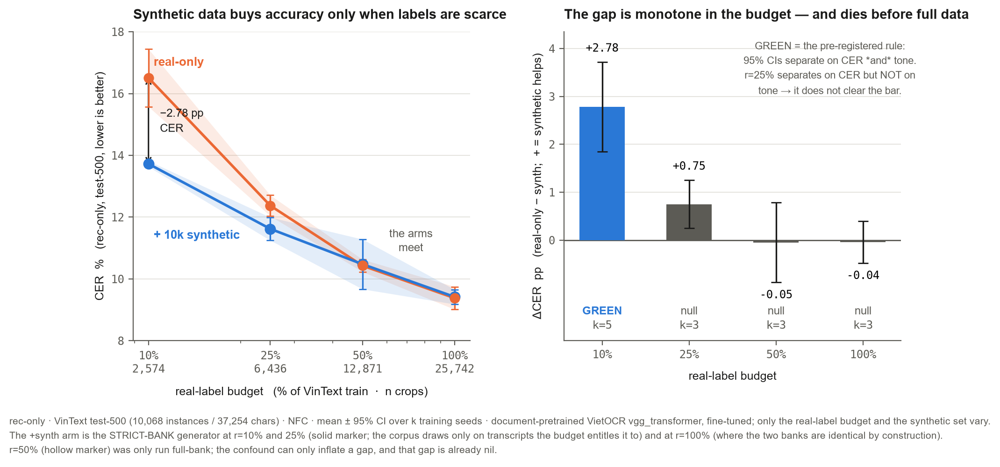
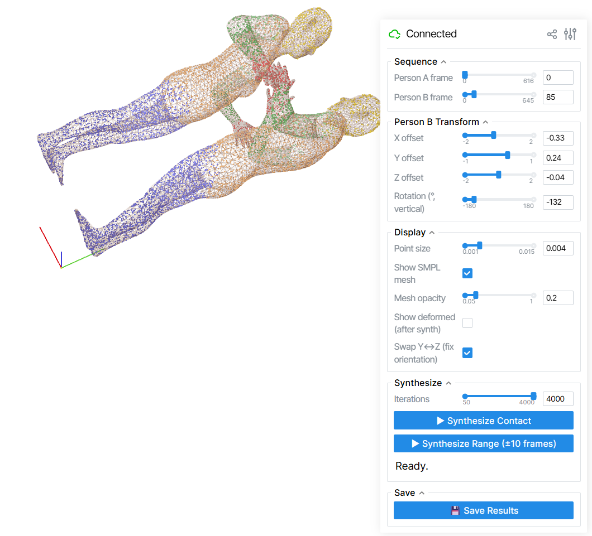
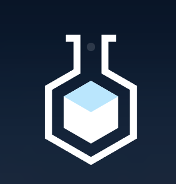
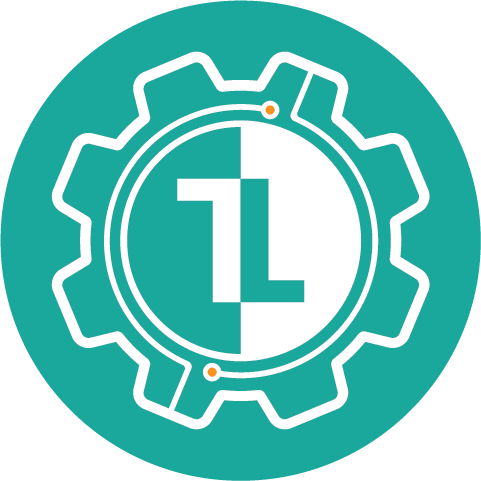

My research focuses on bridging 3D/4D neural representations (e.g., 3D Gaussian Splatting) with physically-grounded scene understanding and efficient ML systems. I aim to develop scalable, trajectory-respecting models that natively capture real-world dynamic mechanics while leveraging low-level system optimization to ensure high-performance, amortized simulation.
{kind=link}
News
Selected Projects · every number below has a ceiling next to it

Engineered a single-model, forward-inference-only GPT-2-124M engine from scratch. Executed a rigorously gated optimization ladder featuring tiled shared-memory GEMM, online softmax flash attention, and KV caching with true M=1 GEMV. Documented honest negative results: weight-only INT8 yielded 0% speedup due to launch bounds at small batch sizes, and fused Layer Norm+matmul was 2.9% slower than isolated kernels.

Conducted a pre-registered, ablation-controlled label-efficiency study on Vietnamese scene-text OCR by building a custom generator and a three-axis NFD scorer. Demonstrated through control arms that the gain primarily stems from supplying sequence-level length signals to repair premature decoder termination, rather than through aggressive domain-realistic pixel degradation.

Investigating amortized, controllable contact deformation on 3D Gaussian Splatting (physics-grounded, native-on-density, trajectory-respecting): ran a pre-registered FEM validation campaign (FEniCSx mixed-(u, p) Taylor-Hood, cross-solver verified) that characterized contact-induced surface bulge as a linear incompressible-confinement effect, and conducted adversarial prior-art occupancy analysis to scope the contribution.
Experience


Technical Skills
Languages & Core Computing
C/C++ · CUDA · Python · Linux/WSL · Bash · Make · Git
GPU Profiling & Optimization
Nsight Compute (ncu) · cuobjdump/SASS · cuBLAS · CUDA events · Roofline analysis
Deep Learning & 3D Vision
PyTorch · llama.cpp · Hugging Face (Diffusers, Accelerate) · Nerfstudio · OpenCV
Awards & Achievements
- Datathon 2026 — THE GRIDBREAKER: Led the team in designing Entity-Relationship Diagrams (ERDs) and architecting a robust machine learning pipeline. Placed in the top 5% of the Kaggle submission leaderboard, but knocked out due to a shortage of business foundation. (2026)
- Active Competitor — HCMC AI Challenge 2025: Gained practical hands-on experience by prototyping and evaluating machine learning models on real-world datasets within a strict competitive timeframe. (2025)
- Academic Merit Scholarship, HCMUT: Awarded for maintaining outstanding academic performance across multiple semesters. (Fall 2024 [3.8], Spring 2026 [3.9])
- Second Prize — Provincial Academic Competition in Mathematics: Awarded for achieving top ranks among high school students in the province-wide examination. (2022)